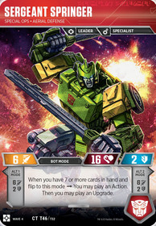
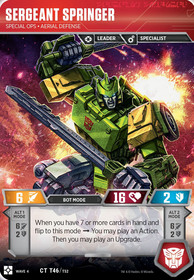

Showing Off with Stacks
Bits and Bolts - Exploring TF:TCG Synergy
2020.07.03
Welcome to Bits and Bolts, a series intended to help Transformers the Trading Card Game newcomers discover some of the valuable interactions between different cards.
Wave 4's Showing Off is one of the few times in Transformers that we get to discover a "stack". Side-effects of our actions are placed on a stack while our actions are completed. In Transformers' sister product, Magic the Gathering, "The Stack" is an important concept with many articles, and we have a similar concept in TF, though perhaps not so central to the game.
Stacks are a concept from computer programming where the last thing to go onto a stack is the first thing that gets taken off a stack. This is very boring when only one item is put on a stack and then taken off, but when two items are put on a stack, the game's behaviour may be surprising to you.
The Expanded Rules 2.0 lets us know we're working with a stack a few times (without naming it as such). In "Actions within Actions" it says:
"If the first Action you play while Brainstorm is resolving causes abilities to trigger, those abilities become pending. Then you play the second Action, any abilities that trigger from the second Action also become pending. All these pending abilities then happen one at a time, starting with the ones that triggered most recently (usually from the second played Action).
In "Handling Multiple Triggered Abilities" it says:
"In some more complex game situations, handling a triggered ability may itself cause other triggered abilities to trigger. The most recent ability to trigger is the one whose effect happens first. If multiple abilities trigger at the same time, and during the resolution of those abilities one or more new triggered abilities trigger, the remaining original triggered abilities wait until the newer abilities are all handled. Once an ability triggers, it will resolve even if the character with that ability flips or is KO’d, or even if the Upgrade with that ability leaves the battlefield. "

We know from the 2019-11-22 Rules Roundup that Showing Off works akin to the Brainstorm situation, at least in that all of Showing Off must be completed before any triggered abilities are resolved. Whether those effects are placed on a stack, or are up to player's choice, is not written in stone, but everything points to it their being placed on a stack.
Q. For Showing Off, can I flip Sergeant Springer to one alt mode and use its effect then flip to the other Alt mode and use its effect too? Or must I resolve Showing Off completely first? [Rules Roundup 2019-11-22] A. Showing Off resolves completely before any abilities that triggered happen.
Because Showing Off has two parts, flip then flip again, it's possible to have more than one side-effect on a stack if, for example, the characters have a 'when you flip to this mode' effects on both sides. There are four of these. Let's look at three of them and understand how their effects get stacked. Then we'll look at the fourth, Twin Twist, as having to resolve Showing Off fully impacts one of his effects in an interesting way.
Let's imagine we have Octone in bot-mode. Our opponent is down to a Motormaster with 7 damage, and a Brawn with 8 damage. We play Showing Off. We're going to flip him to each alt-mode to win the game, but we're going to do it by flipping to the Autobot damage mode first.
- We play Showing Off, selecting Octone.
- We flip Octone to Alt1 Mode; putting a "Do 1 damage to an Autobot" onto a stack.
- We flip Octone to Alt2 Mode; putting a "Do 1 damage to a Decepticon" onto a stack.
- We resolve the top of our stack; doing 1 damage to Motormaster.
- Motormaster is KO'd.
- We resolve the top of our stack; doing 1 damage to Brawn.
- Brawn is KO'd. We Win!!!
That was... unexpected. I hope I'm not alone in feeling that the Octone flip order was backwards from how I expected I would have to play it; but if we'd played it the way my instincts would expect it to be played, my damage to an Autobot would have failed due to Motormaster's non-attack damage protection for his allies, and then we would have KO'd Motormaster. While an attacking Octone is likely to KO Brawn, if they had another character left on the field, we wouldn't be able to win the game on that turn.
Autobot Gears - Transport and Reconnaissance
Let's look at Gears now. Gears is useful for messing with your opponent's Upgrades, but a Showing Off play could be surprising there. Let's start with Gears in Bot mode, and let's assume our opponent has two characters, each with an Armor.
- We play Showing Off, selecting Gears.
- We flip Gears to Alt mode; putting a "Move an Upgrade from an enemy to another enemy" onto a stack.
- We flip Gears to Bot mode; putting a "Return an Upgrade on an enemy to it's owner's hand" onto a stack.
- We resolve the top of our stack; returning one of the Armors to our opponent's hand.
- We resolve what's now top of our stack; moving the remaining Armor to the other character.
- One of our opponent's characters still has an Armor.
That's not great. Let's try again, this time with Gears in Alt mode.
- We play Showing Off, selecting Gears.
- We flip Gears to Bot mode; putting a "Return an Upgrade on an enemy to it's owner's hand" onto a stack.
- We flip Gears to Alt mode; putting a "Move an Upgrade from an enemy to another enemy" onto a stack.
- We resolve the top of our stack; moving the one character's Armor on top of the other, scrapping the other Armor.
- We resolve what's now top of our stack; returning the recently moved Armor to our opponent's hand.
- Our opponent's characters have no armor.
It's counter-intuitive, but it turns out that Showing Off is better played on Autobot Gears when he's in Alt mode.
Sergeant Springer - Special Ops, Aerial Defense
 

Sergeant Springer has three "when you flip" effects, which gives us quite the permutation of options. Let's consider flipping to each of the Alt modes, and then let's consider flipping to an Alt mode and his Bot mode.
When Springer flips to Alt2 mode, you discard an Upgrade from hand and draw 2 cards. When he flips to Alt1 mode, you discard an Action from hand and draw 2 cards. Let's run through this play.
- We play Showing Off, selecting Sergeant Springer.
- We flip Springer to Alt2 mode; putting a "You may scrap an Upgrade from your hand. If you do, draw 2 cards." onto a stack.
- We flip Springer to Alt1 mode; putting a "You may scrap an Action from your hand. If you do, draw 2 cards." onto a stack.
- We resolve the top of our stack; discarding an Action and drawing 2 cards.
- We resolve what's now top of our stack; discarding an Upgrade and drawing 2 cards.
The only upshot here is that we need to have another Action in hand when we play Showing Off, whereas we could discard an Upgrade we drew. The rule of thumb for Sergeant Springer and a double-Alt mode Showing Off then, is that you must at least have the discard card type of the mode Springer ends up in.
Sergeant Springer's Bot Mode let's you play an Action, and then an Upgrade, but only if you have 7 cards in hand. Let's run through one of those plays.
- We have 7 cards in hand, but our Upgrades suck.
- We play Showing Off, selecting Sergeant Springer.
- We flip Springer to Alt1 mode; putting a "You may scrap an Action from your hand. If you do, draw 2 cards." onto a stack.
- We flip Springer to Bot mode; checking if we "have 7 or more cards in hand". We don't.
- We resolve the top (and only item) of our stack; discarding an Action and drawing 2 cards.
We see here that, if you have 7 cards in hand, playing Showing Off on Sergeant Springer is a bad idea. While you will end the Showing Off with 7 cards (Showing Off played, 1 card scrapped, 2 drawn), you will only have 6 cards in hand when the Bot mode check is made.
Lastly, let's look at Twin Twist. Unlike the previous three characters, Twin Twist doesn't have any odd ordering as his Alt mode Pierce 3 flip effect has no immediate impact. However his Body mode effect is very interesting. Because flip effects are put on a stack, Twin Twist always does 1 damage to everyone when he plays Showing Off, regardless of which mode he began in. This is again a bit counter-intuitive when Twin Twist starts in Alt-mode, so let's walk through that play.
- We play Showing Off, selecting Twin Twist (Alt mode).
- We flip Twin Twist to Body mode; putting a "Your opponent chooses one of their characters and does 1 damage do it. If you flipped this character at least 2 times this turn, instead do 1 damage to each enemy. " onto a stack.
- We flip Twin Twist to Alt mode; putting a "This gets Pierce 3 until end of turn" onto a stack.
- We resolve the top of our stack; Twin Twist gets Pierce 3.
- We resolve what's now top of our stack; we do 1 damage to each enemy.
Because the flip effects are put on a stack, Twin Twist will always have flipped twice with a Showing Off when it comes time to resolve those effects. Twin Twist is all about Showing Off; as if you needed even more of a reason to play Showing Off with Twin Twist!
I hope that was useful. I doubt it will come up in many games right now, but I expect that future waves will lead to more of these situations and it'll become something each player needs to know about someday.
I want to acknowledge the feedback I got for this article. Many folk offered me their opinions and advice and it was very much appreciated. Thank you!